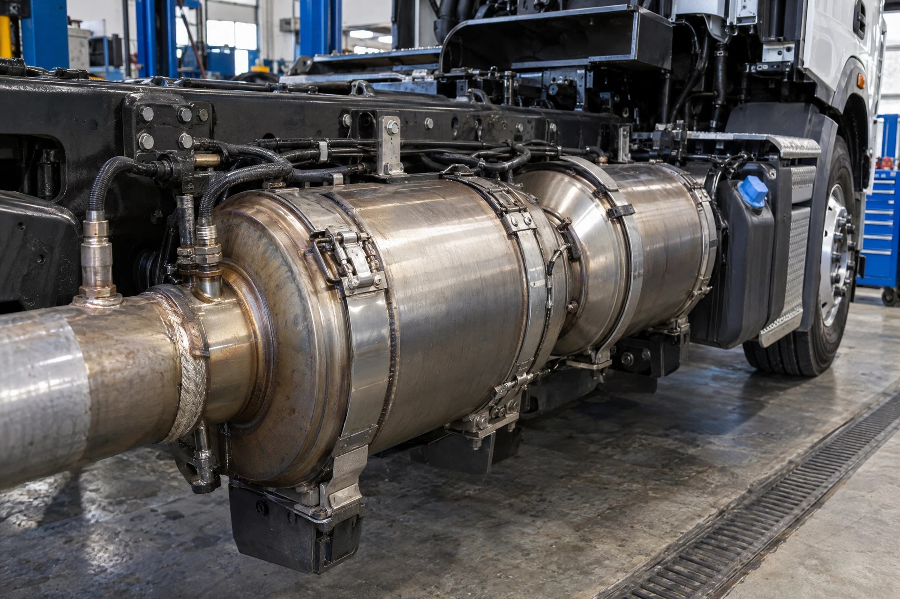

01
Verify
Write down exactly what the truck does, and when it does it.

Start with the symptom. Collect evidence. Follow the system. Prove the cause before ordering parts.
TruckFixHub is organized around the way drivers and technicians encounter a problem—not around a part catalog.
Manual rule: A symptom is evidence—not a parts order.
Write down exactly what the truck does, and when it does it.
Save codes, readings, changes, and the condition that recreates the complaint.
Check basics, connections, plumbing, fluid condition, and disturbed work first.
Follow power, air, fuel, heat, movement, or command versus actual response.
Confirm the failed circuit, component, connection, or mechanical condition explains it.
Repeat the original operating condition and document what actually fixed it.
These visual entries lead to existing diagnostic diagrams and symptom paths. Photos are illustrative system views, not location or fitment references.
No crank, slow crank, batteries, alternator, voltage drop.
Illustrative only; confirm exact configuration.
Low power, smoke, boost leaks, turbo and air-path clues.
Illustrative only; confirm exact configuration.
DPF, DEF, SCR, regen, derate, and sensor concerns.
Illustrative only; confirm exact configuration.
Overheating, coolant loss, fan operation, pressure, and flow.
Illustrative only; confirm exact configuration.
Air build, leaks, brake application, and hot-wheel complaints.
Illustrative only; confirm exact configuration.
Vibration, U-joints, clunks, transmission, and torque transfer.
Illustrative only; confirm exact configuration.
Hub heat, seals, bearings, steering, and suspension evidence.
Illustrative only; confirm exact configuration.The parts visual library pairs recognizable component illustrations, system routes, and plain-English explanations. It is a learning aid—not a substitute for manufacturer-specific location, fitment, testing, or safety information.
Open the Parts Visual Library →Every route below preserves the original TruckFixHub library destinations.
Original gear, road-ready finds, downloads, and checklists live in the existing Diesel Dollar Shopify store.
See the Diesel Fuel Investor T-Shirt →In preparation • Blake Pierce
A practical companion is being developed around evidence-first heavy-duty troubleshooting. Until then, use the public online library and current manufacturer information for exact application procedures.